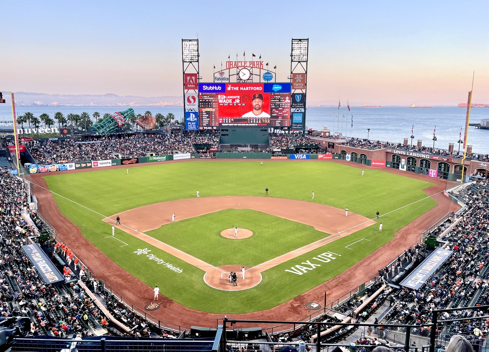

Welcome to Bay Area Sports Blog

Bay Area Sports Blog covers the 49ers, Warriors, Giants, A's, Sharks, Stanford, Cal, betting angles, fan reactions, and the biggest stories across Bay Area sports.

Bay Area Sports Blog covers the 49ers, Warriors, Giants, A's, Sharks, Stanford, Cal, betting angles, fan reactions, and the biggest stories across Bay Area sports.